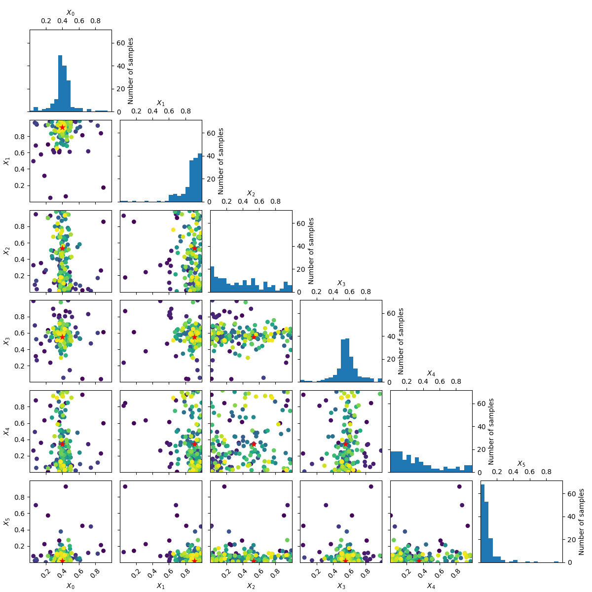
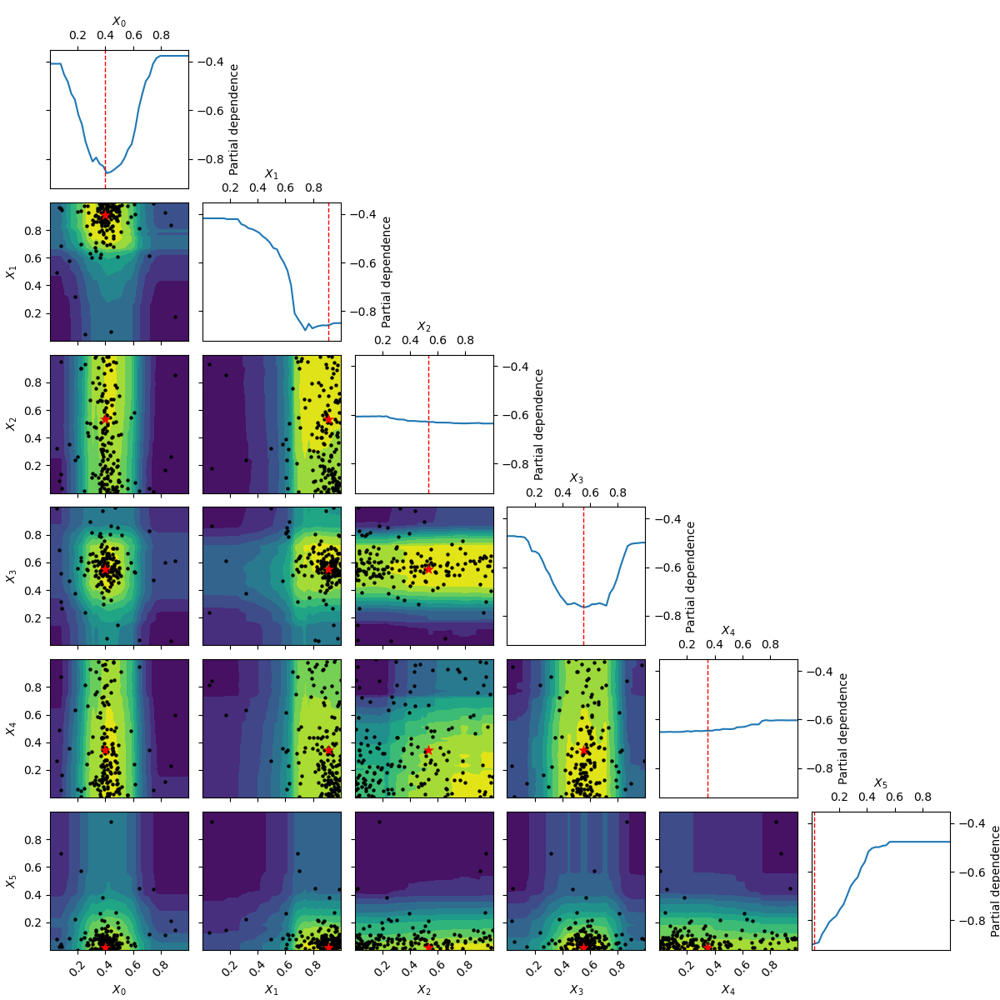

Note
Click here to download the full example code or to run this example in your browser via Binder
Visualizing optimization results¶
Tim Head, August 2016. Reformatted by Holger Nahrstaedt 2020
Bayesian optimization or sequential model-based optimization uses a surrogate
model to model the expensive to evaluate objective function func. It is
this model that is used to determine at which points to evaluate the expensive
objective next.
To help understand why the optimization process is proceeding the way it is, it is useful to plot the location and order of the points at which the objective is evaluated. If everything is working as expected, early samples will be spread over the whole parameter space and later samples should cluster around the minimum.
The plots.plot_evaluations function helps with visualizing the location and
order in which samples are evaluated for objectives with an arbitrary
number of dimensions.
The plots.plot_objective function plots the partial dependence of the objective,
as represented by the surrogate model, for each dimension and as pairs of the
input dimensions.
All of the minimizers implemented in skopt return an [OptimizeResult]()
instance that can be inspected. Both plots.plot_evaluations and plots.plot_objective
are helpers that do just that
print(__doc__)
import numpy as np
np.random.seed(123)
import matplotlib.pyplot as plt
Toy models¶
We will use two different toy models to demonstrate how plots.plot_evaluations
works.
The first model is the benchmarks.branin function which has two dimensions and three
minima.
The second model is the hart6 function which has six dimension which makes
it hard to visualize. This will show off the utility of
plots.plot_evaluations.
Starting with branin¶
To start let’s take advantage of the fact that benchmarks.branin is a simple
function which can be visualised in two dimensions.
from matplotlib.colors import LogNorm
def plot_branin():
fig, ax = plt.subplots()
x1_values = np.linspace(-5, 10, 100)
x2_values = np.linspace(0, 15, 100)
x_ax, y_ax = np.meshgrid(x1_values, x2_values)
vals = np.c_[x_ax.ravel(), y_ax.ravel()]
fx = np.reshape([branin(val) for val in vals], (100, 100))
cm = ax.pcolormesh(x_ax, y_ax, fx,
norm=LogNorm(vmin=fx.min(),
vmax=fx.max()),
cmap='viridis_r')
minima = np.array([[-np.pi, 12.275], [+np.pi, 2.275], [9.42478, 2.475]])
ax.plot(minima[:, 0], minima[:, 1], "r.", markersize=14,
lw=0, label="Minima")
cb = fig.colorbar(cm)
cb.set_label("f(x)")
ax.legend(loc="best", numpoints=1)
ax.set_xlabel("$X_0$")
ax.set_xlim([-5, 10])
ax.set_ylabel("$X_1$")
ax.set_ylim([0, 15])
plot_branin()
Evaluating the objective function¶
Next we use an extra trees based minimizer to find one of the minima of the
benchmarks.branin function. Then we visualize at which points the objective is being
evaluated using plots.plot_evaluations.
from functools import partial
from skopt.plots import plot_evaluations
from skopt import gp_minimize, forest_minimize, dummy_minimize
bounds = [(-5.0, 10.0), (0.0, 15.0)]
n_calls = 160
forest_res = forest_minimize(branin, bounds, n_calls=n_calls,
base_estimator="ET", random_state=4)
_ = plot_evaluations(forest_res, bins=10)
plots.plot_evaluations creates a grid of size n_dims by n_dims.
The diagonal shows histograms for each of the dimensions. In the lower
triangle (just one plot in this case) a two dimensional scatter plot of all
points is shown. The order in which points were evaluated is encoded in the
color of each point. Darker/purple colors correspond to earlier samples and
lighter/yellow colors correspond to later samples. A red point shows the
location of the minimum found by the optimization process.
You should be able to see that points start clustering around the location of the true miminum. The histograms show that the objective is evaluated more often at locations near to one of the three minima.
Using plots.plot_objective we can visualise the one dimensional partial
dependence of the surrogate model for each dimension. The contour plot in
the bottom left corner shows the two dimensional partial dependence. In this
case this is the same as simply plotting the objective as it only has two
dimensions.
Partial dependence plots¶
Partial dependence plots were proposed by [Friedman (2001)]_ as a method for interpreting the importance of input features used in gradient boosting machines. Given a function of \(k\): variables \(y=f\left(x_1, x_2, ..., x_k\right)\): the partial dependence of $f$ on the $i$-th variable $x_i$ is calculated as: \(\phi\left( x_i \right) = \frac{1}{N} \sum^N_{j=0}f\left(x_{1,j}, x_{2,j}, ..., x_i, ..., x_{k,j}\right)\): with the sum running over a set of $N$ points drawn at random from the search space.
The idea is to visualize how the value of \(x_j\): influences the function \(f\): after averaging out the influence of all other variables.
from skopt.plots import plot_objective
_ = plot_objective(forest_res)
The two dimensional partial dependence plot can look like the true objective but it does not have to. As points at which the objective function is being evaluated are concentrated around the suspected minimum the surrogate model sometimes is not a good representation of the objective far away from the minima.
Random sampling¶
Compare this to a minimizer which picks points at random. There is no structure visible in the order in which it evaluates the objective. Because there is no model involved in the process of picking sample points at random, we can not plot the partial dependence of the model.
dummy_res = dummy_minimize(branin, bounds, n_calls=n_calls, random_state=4)
_ = plot_evaluations(dummy_res, bins=10)
Working in six dimensions¶
Visualising what happens in two dimensions is easy, where
plots.plot_evaluations and plots.plot_objective start to be useful is when the
number of dimensions grows. They take care of many of the more mundane
things needed to make good plots of all combinations of the dimensions.
The next example uses class:benchmarks.hart6 which has six dimensions and shows both
plots.plot_evaluations and plots.plot_objective.
bounds = [(0., 1.),] * 6
forest_res = forest_minimize(hart6, bounds, n_calls=n_calls,
base_estimator="ET", random_state=4)
_ = plot_evaluations(forest_res)
_ = plot_objective(forest_res, n_samples=40)
- 
- 
Going from 6 to 6+2 dimensions¶
To make things more interesting let’s add two dimension to the problem.
As benchmarks.hart6 only depends on six dimensions we know that for this problem
the new dimensions will be “flat” or uninformative. This is clearly visible
in both the placement of samples and the partial dependence plots.
bounds = [(0., 1.),] * 8
n_calls = 200
forest_res = forest_minimize(hart6, bounds, n_calls=n_calls,
base_estimator="ET", random_state=4)
_ = plot_evaluations(forest_res)
_ = plot_objective(forest_res, n_samples=40)
# .. [Friedman (2001)] `doi:10.1214/aos/1013203451 section 8.2 <http://projecteuclid.org/euclid.aos/1013203451>`

Total running time of the script: ( 7 minutes 46.158 seconds)
Estimated memory usage: 89 MB